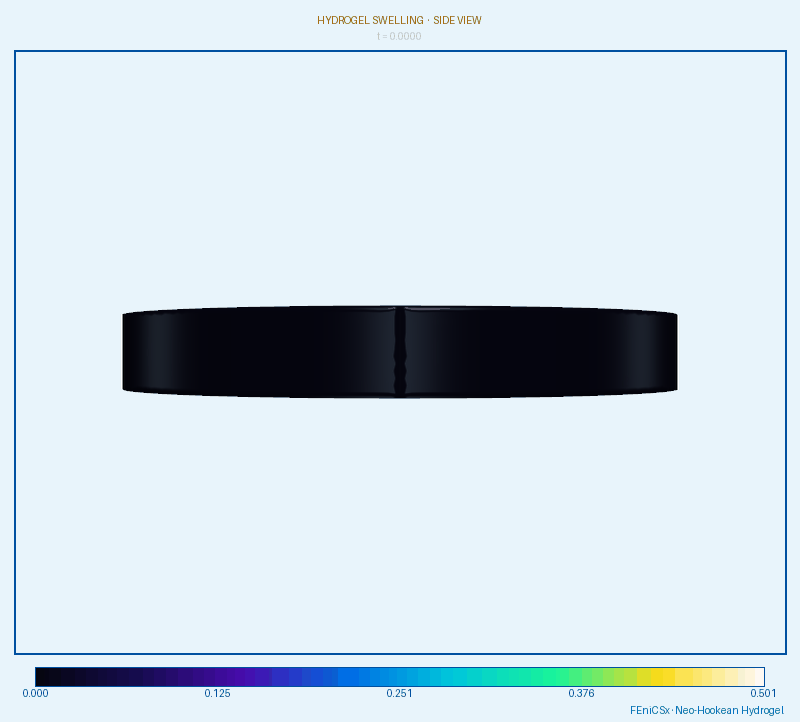

Soft Matter · Article
Hydrogel
swelling.
A thermodynamically consistent continuum model for swelling driven by water absorption — grounding the Flory–Huggins mixing energy in a variational framework and deriving the coupled mechanical and chemical balance laws via the principle of virtual power.
Hydrogels are crosslinked polymer networks that imbibe large amounts of solvent, swelling to many times their dry volume while remaining elastic. Modeling this behavior requires coupling finite elastic deformation to solvent transport, with the two governed by a single free energy. I build the model from a mixing energy of Flory–Huggins type together with an elastic strain energy for the network, and derive the governing equations directly from a variational principle rather than postulating balance laws.
Thermodynamic structure
Applying the principle of virtual power yields the coupled mechanical equilibrium and solvent mass-balance equations. Enforcing the second law through the Coleman–Noll procedure, the reduced dissipation inequality constrains the water-flux mobility tensor \( \boldsymbol{M} \) to be positive semi-definite — a restriction that is both physically necessary and directly actionable in a finite-element implementation. The chemical potential of the solvent then acts as the driving force for transport, and equilibrium swelling is reached when it equilibrates across the body and with the surrounding bath.
Finite-element simulation
The coupled problem is discretized and solved numerically. The animations below show a swelling specimen from three viewpoints, colored by displacement magnitude as solvent is absorbed and the network deforms toward its equilibrium swollen state.



Extensions in progress
The model is currently being extended to biological tissues and to delamination problems in layered hydrogel systems, where mismatch in swelling between adjacent layers drives interfacial failure. This connects the swelling framework to my broader work on phase-field fracture and on the mechanics of living soft matter.